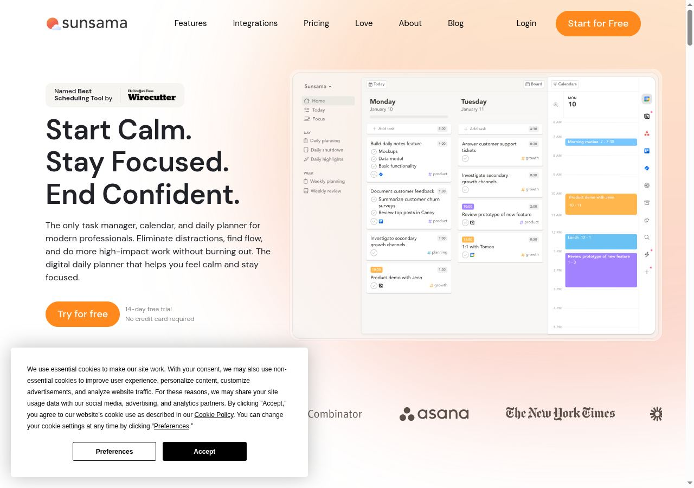
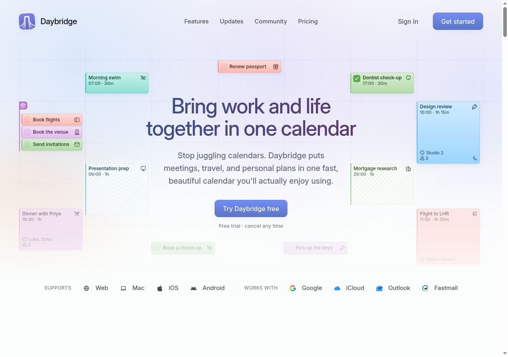
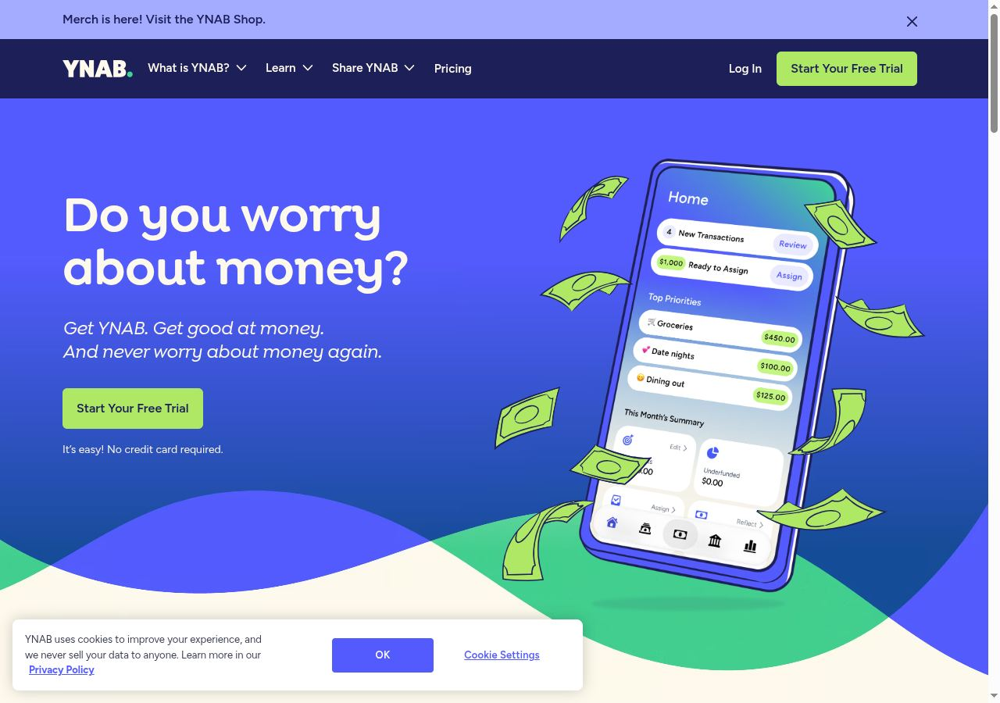
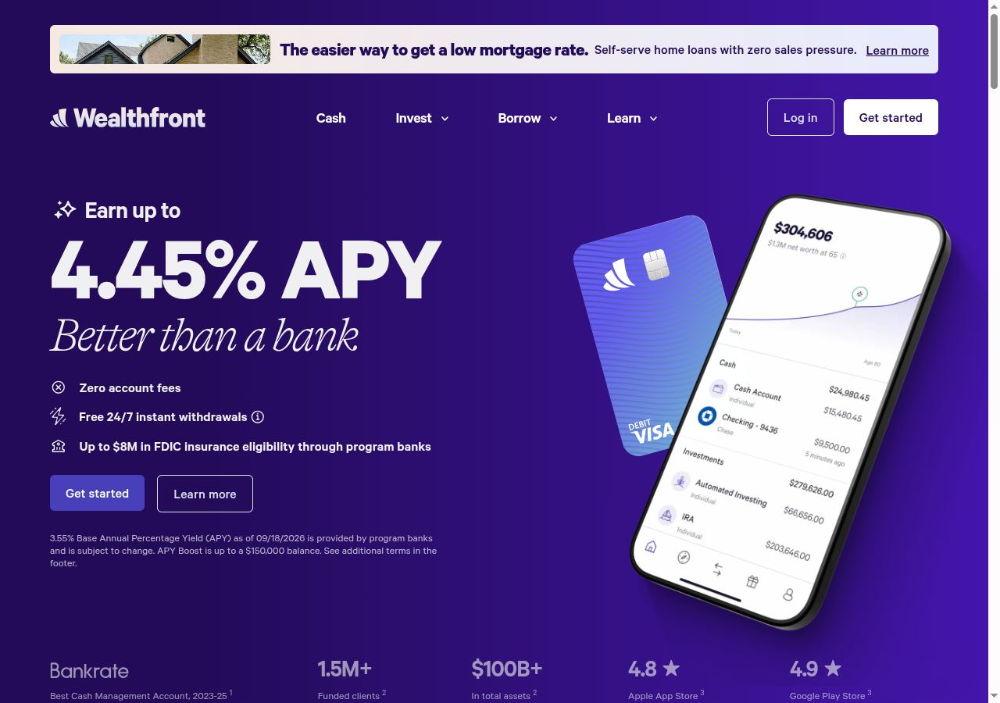
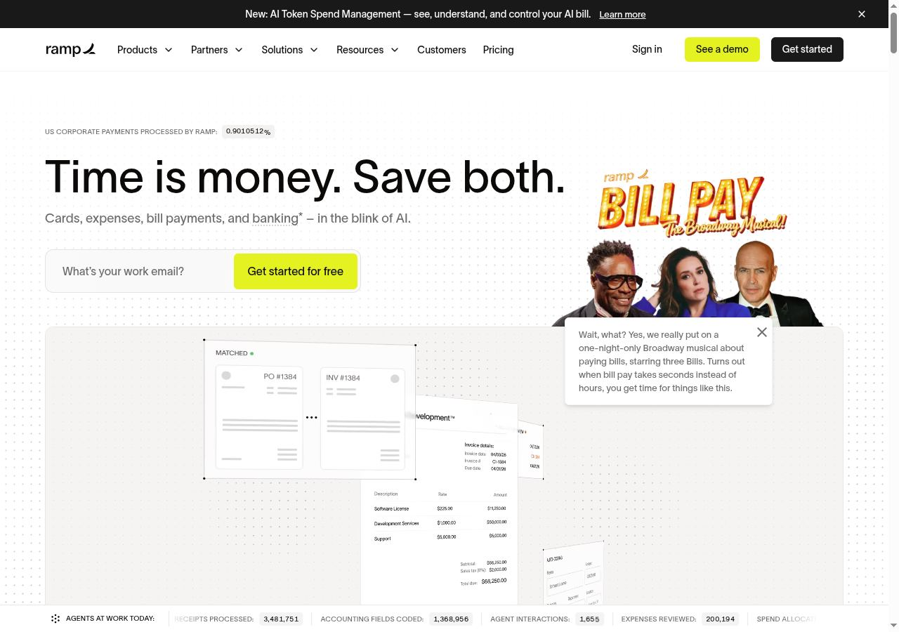
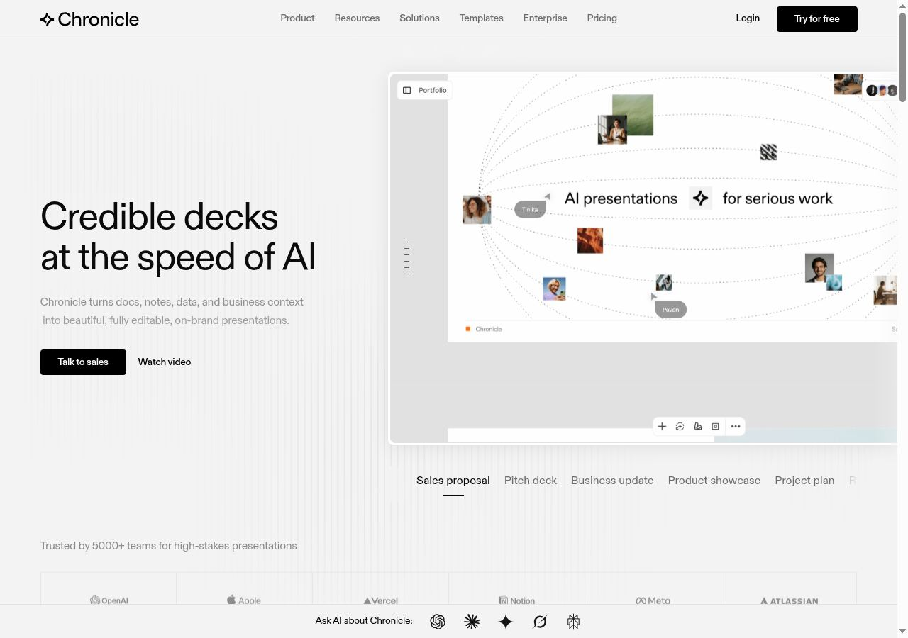
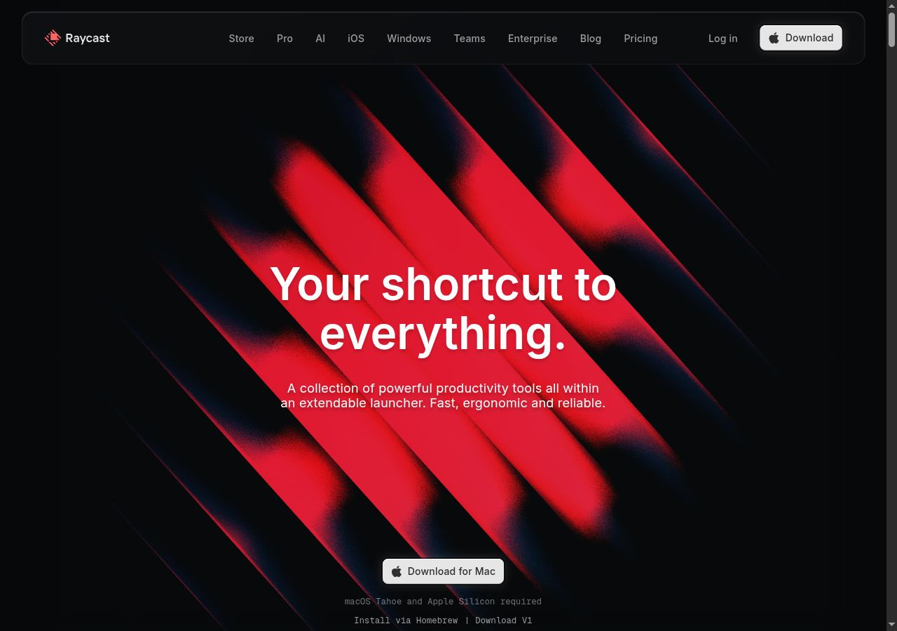

Landing exploration · Structure before styling
One product. Three ways in. Aegis connects everyday money to future plans. The landing should make that relationship clear in one glance.
A structure, ten website references, and three distinct composition studies. These are proposals for the next design—not a released product page.
Compare the directions ↗ Help a visitor see what Aegis does, recognize their own situation, and understand how to start. Each section answers a question.
HEADER Aegis · Product · How it works · Your data Sign in / Create an account
01 A clear promise What does this help me do?
A financial calendar beside the headline. 02 A month in focus How would I use it?
One sample: income → rent → savings plan. 03 Record. Arrange. Review. How much work is this?
Three actions, with focused product views. 04 Room for real life Does it fit my priorities?
A trip, a buffer or a debt plan. 05 Insights in context What does the AI add?
One optional example; explain provider setup. 06 Your data, your setup What control do I have?
Source, exports and self-hosting documentation. 07 Questions, then a start What should I know first?
Practical FAQ and one clear account action. This is a content hierarchy, not seven full-screen panels. Combine chapters where useful; keep the next useful content within reach.
A Recommended Aegis Meridian A month, connected B DravenIQ-inspired Financial Observatory The whole picture, in view C New Aegis expression The Money Journal Make room for real life
Composition studies with illustrative data. The small interactions work; account actions are shown as labeled placements. Preview fonts are system approximations of the proposed type roles.
A / Aegis Meridian Existing identity · Amber / teal / charcoal
AEGIS Product How it works Your data Create an account ↗ Your money has a timeline.
Know what's Plan what Bring income, expenses and future plans into one financial calendar.
Proposed account action A month, connected
September 2026 Illustrative FRI SAT SUN MON TUE WED
25 26 27 28 29 30
25 Sep · Recorded Income + ฿65,000 28 Sep · Recorded Rent − ฿18,000 30 Sep · Planned Savings ฿3,000
25 SEP / INCOME Give your month a starting point. A recorded ฿65,000 income sits alongside the commitments and plans that follow.
Select an event. This is a partial example, not a complete balance or automatic transfer.
Why this direction The calendar explains Aegis immediately. Amber and teal connect to the product's existing identity.
Carry the story down Sample month → routine → longer goals → optional insights → ownership and questions.
Design constraint Use a short agenda on phones. Keep dates readable and distinguish recorded money from planned contributions.
B / Financial Observatory DravenIQ-inspired · Void / silver / cyan
AEGIS The picture The product Your data Create an account ↗ A clearer perspective on your money
Your whole In view. See today's records, upcoming commitments and longer plans together.
Proposed account action Conceptual silver core and incomplete cyan orbit; a brand metaphor, not financial data Engineered Cosmos composition study 01 Now 02 Next 03 Later
Recorded / 25 September Start with what happened. The sample income record gives your month a clear point of reference.
Income ฿65,000 Illustrative data
Why this direction A strong connection to DravenIQ's silver materials, quiet space and precise cyan accents.
Carry the story down Broad picture → Now / Next / Later chapters → one monthly review → ownership and setup.
Design constraint The core is metaphorical. Keep product evidence visible and start with a still image before considering motion.
C / The Money Journal Proposed Aegis extension · Ivory / ink / amber
AEGIS Everyday money Bigger plans About Start your plan ↗ A little intention. A clearer month. A personal finance companion
For the things that matter to you
Make room real life. The everyday money, the bigger plans, and a little more room to see them together.
Proposed account action 01 — A plan with a purpose A trip A buffer A debt plan
A weekend Put the trip you have in mind beside the everyday costs you already know.
Illustrative trip budget ฿12,000
Planned contribution ฿3,000
Next review 30 September
Example only. A plan to review, not an automatic payment or financial recommendation. CHAPTER 02 Small records. A more considered month. Show the product here: a recorded expense, its place in the calendar, and the goal it sits beside.
Why this direction A familiar life priority is the entry point. The editorial layout makes the story feel personal and readable.
Carry the story down Choose a priority → example plan → monthly routine and product → broader uses → ownership and FAQ.
Design constraint This is a new light expression, not the established theme. Bring the actual product into the second chapter.
The recommendation Let Aegis look like Aegis. Start with A — Meridian : retain amber and teal, make time the organizing idea, and show one useful month. Choose B for a stronger DravenIQ connection, or C for a more editorial introduction.
Ten current pages reviewed for their story, product evidence and next action. Seven hero views were also visually inspected. Screenshots are dated research references—not Aegis assets.

Planning / direction A A visible planner beside the promise, followed by a daily-workflow story.
For Aegis: Put the financial calendar beside the headline. Explain a short monthly routine.
Scope & limits Do not transfer its trial, integration or testimonial claims.
Inspect next-section capture ↗ 
Planning / direction A Familiar calendar entries become the hero’s visual language.
For Aegis: Use income, rent and savings dates to explain Aegis before listing features.
Scope & limits Avoid a cloud of unrelated labels. Native-app and offline claims do not transfer.
Lunch Money Page content reviewed
Personal finance / direction A Feature groups are organized around tracking, analysis and human context.
For Aegis: Group Aegis around Record, Plan and Review, with a concrete example.
Scope & limits Bank imports, pricing and testimonials are not Aegis facts. Browser verification prevented visual capture.
Actual Budget Page content reviewed
Ownership / all directions A product demo and explicit setup paths sit alongside data-ownership explanations.
For Aegis: Provide a sample plus clear source, export and self-hosting destinations.
Scope & limits Do not imply Aegis has equivalent offline or encryption guarantees. Screenshot capture stalled.

Personal finance / direction C A familiar money concern leads into reassurance, setup and life outcomes.
For Aegis: Open with a recognizable priority, then show the product action that supports it.
Scope & limits Keep Aegis’s own voice. Do not reuse savings statistics, promises or customer evidence.
Inspect next-section capture ↗ 
Financial services / direction C A focused offer and product view lead to explanations organized by service and life context.
For Aegis: Let each chapter answer one decision, then connect a plan to its purpose.
Scope & limits Rates, returns, deposit protections and investment-service claims do not transfer.
Inspect next-section capture ↗ Mercury Page content reviewed
Product narrative / supporting Product and demo paths sit within a broader story about building a business.
For Aegis: Connect the reason to plan with a direct route into an example.
Scope & limits No banking or adoption claims. Capture stalled, so no visual material or typography judgment is made.

Workflow / supporting An outcome-led opening is followed by a concrete financial workflow and grouped use cases.
For Aegis: Show how one record relates to its date and budget.
Scope & limits Leave out autonomous-agent claims, counters and the campaign treatment. Some captured imagery was still loading.

Product evidence / direction B Large output previews have named use-case controls immediately beside them.
For Aegis: Use Now, Next and Later controls to change the financial example in place.
Scope & limits Do not hide essential content behind motion. The second capture caught an unfinished reveal.

Brand expression / direction B A bold dark opening leads into an enlarged interface demonstration.
For Aegis: Give the DravenIQ-inspired direction one focal point, then show the product clearly.
Scope & limits Preserve Aegis identity. Do not copy Raycast artwork or delay the useful product explanation.
Inspect next-section capture ↗ Reviewed 28 September 2026. Some captures include consent notices or unfinished animation states. Lunch Money's browser verification was not bypassed; Actual and Mercury captures stalled. Those three use text-based observations only.